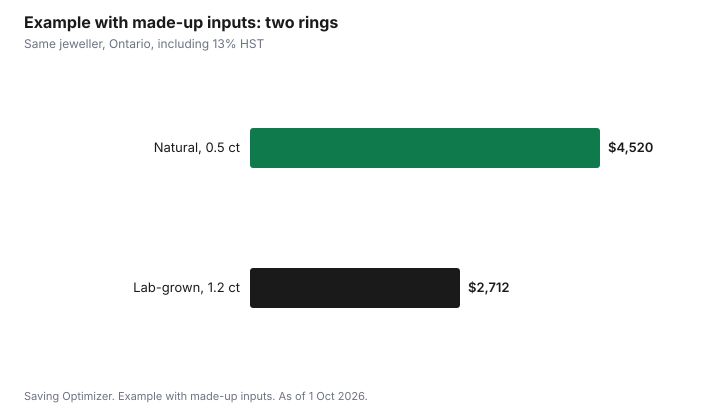

Weddings · Canada
Engagement Ring Budget in Canada: Lab-Grown vs Natural Diamonds and How to Compare

An engagement ring in Canada should cost what you can pay from savings without debt, and the biggest choice that changes the price is between a lab-grown and a natural diamond, as of 1 October 2026. Lab-grown diamonds have the same physical, chemical and optical properties as natural ones and usually cost far less for the same size and quality, but they have little resale value. Canadian industry guidelines, built on the Competition Act, say a lab-grown stone must be described as "laboratory-grown", "laboratory-created" or "synthetic" right before the word "diamond". Compare stones using the 4Cs and an independent grading report, add sales tax, and insure the ring once you buy it.
Key takeaways
- Set the budget from what you have saved. Old salary rules came from advertising, not from financial planning.
- Lab-grown and natural diamonds are physically the same material. Lab-grown usually costs much less, but resale value is limited.
- In Canada, "diamond" alone means natural. A lab-grown stone must be called laboratory-grown, laboratory-created or synthetic, with those words right before "diamond".
- Carat and colour move price most for most buyers; cut matters most for sparkle.
- Ask for an independent grading report and compare like with like.
- Home insurance often limits jewellery coverage; ask your insurer about listing (scheduling) the ring.
Set the budget first
Start with the amount you can pay in cash, or save before the proposal, without touching an emergency fund. Then think about what else is coming: a wedding, a move, a home down payment. A ring is a one-time purchase that sits next to those goals. Rules such as "spend two months' salary" came from diamond advertising and have no basis in personal finance. If the wedding budget is tight, a modest ring now and an upgrade later, or an anniversary band, is common.
Lab-grown or natural
| Point | Lab-grown diamond | Natural diamond |
|---|---|---|
| What it is | Crystal carbon grown in a lab; same physical, chemical and optical properties | Crystal carbon formed in the earth |
| How it must be described in Canada | "Laboratory-grown", "laboratory-created" or "synthetic" diamond | "Diamond" alone, or natural diamond |
| Price for the same size and quality | Usually much lower; prices have fallen in recent years | Higher |
| Resale value | Limited | Some resale value, usually well below the retail price paid |
| Grading reports | Available from major labs, labelled as laboratory-grown | Available from major labs |
The Canadian Jewellers Association's guidelines say that when the word "diamond" is used alone, it must mean a natural diamond. A lab-grown stone must say laboratory-grown, laboratory-created or synthetic, placed immediately before "diamond" and with equal prominence. Words like "real", "genuine" or "natural" should not be used for lab-grown stones. Environmental claims, such as "eco-friendly", must be backed up under the Competition Act; vague green claims are a reason to ask questions.
Neither choice is wrong. If the ring is about looks and value for money now, lab-grown gives a larger or higher-grade stone for the same budget. If resale value or a natural origin matters to you, natural costs more. Moissanite and other gemstones are different materials and are cheaper again.
The 4Cs and what moves the price
| C | What it means | Price effect |
|---|---|---|
| Carat | Weight; larger stones are rarer | Price rises faster than weight; jumps at round numbers like 1 carat |
| Cut | How well the stone is proportioned and polished | Drives sparkle; a better cut can make a smaller stone look better |
| Colour | From colourless to light yellow or brown | Near-colourless grades cost much less than colourless and can look the same once set |
| Clarity | Inclusions and blemishes | "Eye-clean" stones look flawless without paying for the top grades |
Ways to get more for the money: choose a stone just under a round carat weight, such as 0.9 instead of 1.0; choose a near-colourless grade in a yellow or rose gold setting; choose an eye-clean clarity rather than the top grade; and do not compromise on cut.
Grading reports and comparing like with like
Ask for an independent grading report from a recognized laboratory, and check that the report number matches the stone (often laser-inscribed on the girdle). Lab-grown stones have their own reports, which state that they are laboratory-grown. Compare stones with the same shape, carat range and grades, and from the same grading lab, because labs can grade differently. Look at the stone in person or in high-quality video before buying.
Taxes, warranties and returns
GST or HST, and provincial sales tax where it applies, is added to the price: 13% in Ontario, for example. Ask whether a quoted price includes tax. Read the return and exchange policy, the warranty on the setting (prongs and stones can loosen), and whether the jeweller offers free cleaning and checks. Some jewellers offer upgrade programs that credit part of the original price toward a larger stone later; read the conditions.
Insuring the ring
Many home and tenant insurance policies limit coverage for jewellery theft to a set amount unless the item is listed (scheduled) on the policy with an appraisal. Ask your insurer what your limit is, what scheduling costs and whether it covers loss, such as a stone falling out, as well as theft. You will usually need an appraisal or receipt. Keep photos, the receipt and the grading report somewhere safe.
Example with made-up inputs: one budget, two stones
These numbers are an example with made-up inputs. They are not market prices. A buyer in Ontario has $4,000 before tax for a ring and compares two options at the same jeweller.
| Line | Natural diamond ring | Lab-grown diamond ring |
|---|---|---|
| Stone | 0.5 carat, near-colourless | 1.2 carat, near-colourless |
| Setting | $800 | $800 |
| Stone price | $3,200 | $1,600 |
| Subtotal | $4,000 | $2,400 |
| HST (13%) | $520 | $312 |
| Total | $4,520 | $2,712 |
In this example, the lab-grown ring has a stone more than twice as large for $1,808 less. The natural ring may have more resale value later. Either way, the $1,808 difference could go toward the wedding or an emergency fund.

Checklist
- Set the budget from savings.
- Decide between lab-grown, natural or another gemstone.
- Prioritize cut; trade down slightly on colour, clarity or carat.
- Get an independent grading report and match it to the stone.
- Read return, warranty and upgrade terms.
- Add the ring to your insurance.
| Point | Ring A | Ring B |
|---|---|---|
| Stone type | ||
| Carat, cut, colour, clarity | ||
| Grading lab and number | ||
| Price before tax | ||
| Tax | ||
| Warranty and returns |
Common mistakes
- Following a salary rule instead of a savings plan.
- Comparing stones graded by different labs as if they were the same.
- Paying for top colour and clarity grades you cannot see.
- Assuming a lab-grown ring will hold its value.
- Not insuring the ring.
Sources
- Canadian Jewellers Association, Guidelines to Advertising Lab Grown Diamonds (canadianjewellers.com, updated 16 Jun 2026), as of 1 Oct 2026. Definitions; description rules; Competition Act basis.
- Canadian Jewellers Association, Canadian Gemstone Guidelines, 2023 revised edition, as of 1 Oct 2026.
- Canadian Jeweller, Lab-grown diamond prices in Canada: Q2 2026 wholesale report (third-party industry report), as of 1 Oct 2026. Wholesale prices down about 13% year over year.
- Competition Bureau Canada, Environmental claims guidance and deceptive marketing practices, as of 1 Oct 2026.
- Canada Revenue Agency, GST/HST rates, as of 1 Oct 2026. 13% HST in Ontario.
- All stone sizes, prices and totals in the example table and chart are made-up inputs.
Frequently asked questions
Are lab-grown diamonds real diamonds?
Lab-grown diamonds have the same physical, chemical and optical properties as natural diamonds. In Canada, industry guidelines based on the Competition Act require them to be described as laboratory-grown, laboratory-created or synthetic diamonds; the word diamond alone means a natural diamond.
Is a lab-grown diamond cheaper?
Usually, yes, for the same size and quality, and prices have fallen in recent years. Resale value is limited, so buy it because you like it, not as an investment.
How much should I spend on an engagement ring in Canada?
Spend what you can pay from savings without debt and without touching an emergency fund. Salary-based rules came from advertising and are not a financial guideline.
Should I insure an engagement ring?
Yes. Many home and tenant policies limit jewellery theft coverage unless the ring is listed on the policy with an appraisal. Ask your insurer about the limit, the cost of scheduling and whether loss is covered.
Researched and drafted with AI assistance and fact-checked against official Canadian sources. How we create content.